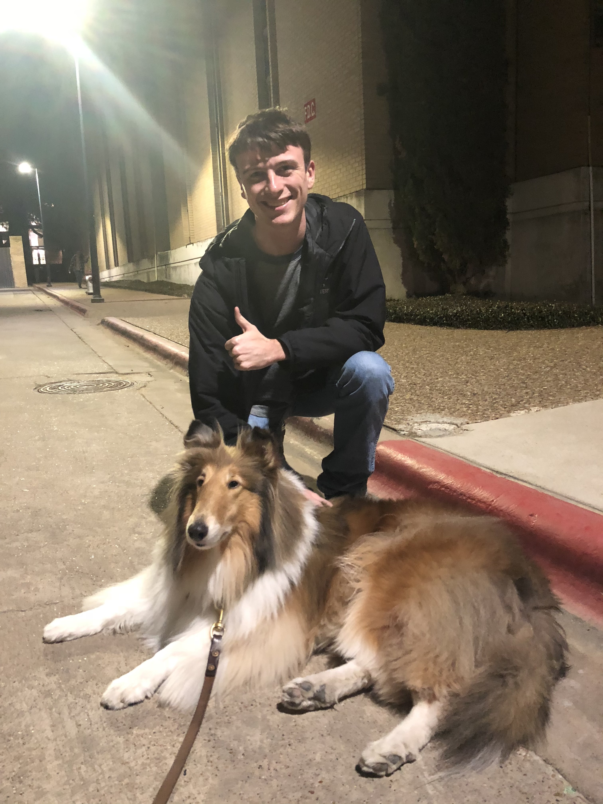

Welcome to my WebPage
Howdy! My name is Matthew Loden and I'm a Computer Engineer here at Texas A&M University.
Take a look around to learn more about me.



Howdy! My name is Matthew Loden and I'm a Computer Engineer here at Texas A&M University.
Take a look around to learn more about me.